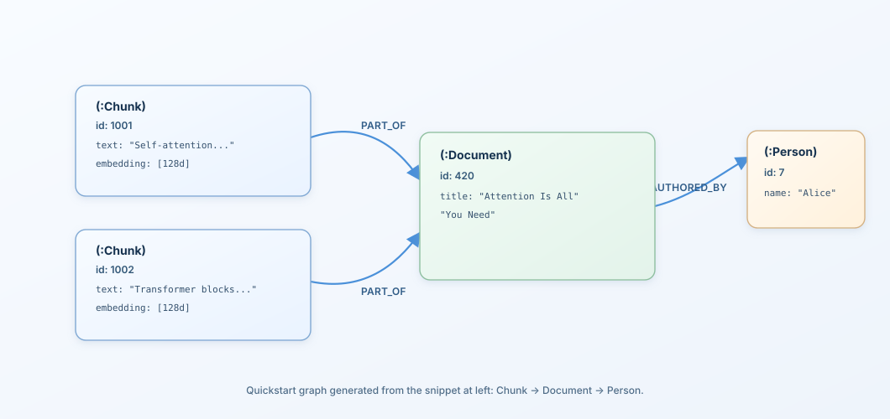

One file. Graph, vector, and full-text search with sub-millisecond latency. No server, no configuration.
Think SQLite, but for knowledge graphs.
curl -fsSL https://raw.githubusercontent.com/jeffhajewski/latticedb/main/dist/install.sh | bash
pip install latticedb
npm install @hajewski/latticedb
Vector similarity, full-text search, and graph traversal in a single Cypher query.
-- Find chunks similar to a query, traverse to their document, then to the author MATCH (chunk:Chunk)-[:PART_OF]->(doc:Document)-[:AUTHORED_BY]->(author:Person) WHERE chunk.embedding <=> $query_vector < 0.3 AND doc.content @@ "neural networks" RETURN doc.title, chunk.text, author.name ORDER BY chunk.embedding <=> $query_vector LIMIT 10
| System | Latency | Recall | Type |
|---|---|---|---|
| LatticeDB | 0.83 ms | 100% | Embedded |
| FAISS HNSW | 0.5–3 ms | — | Library |
| Weaviate | 1.4 ms | — | Server |
| Qdrant | ~1–2 ms | — | Server |
| pgvector | ~5 ms | 99% | Extension |
| Chroma | 4–5 ms | — | Embedded |
| Pinecone | ~15 ms | — | Cloud |
| System | Latency | Type |
|---|---|---|
| LatticeDB | 39 µs | Embedded |
| SQLite (recursive CTE) | 548 µs | Embedded |
| Kuzu | 19 ms | Embedded |
| Neo4j | 10 ms | Server |
Major query-engine correctness work and stronger reliability across core and bindings.
This graph is rendered from the exact creation/query pattern shown below.
These statements build the graph shown on the right.
CREATE (alice:Person {name: "Alice"}) CREATE (doc:Document {title: "Attention Is All You Need"}) CREATE (c1:Chunk {text: "Self-attention..."}) CREATE (c2:Chunk {text: "Transformer blocks..."}) CREATE (c1)-[:PART_OF]->(doc) CREATE (c2)-[:PART_OF]->(doc) CREATE (doc)-[:AUTHORED_BY]->(alice) MATCH (chunk:Chunk)-[:PART_OF]->(doc:Document)-[:AUTHORED_BY]->(author:Person) RETURN doc.title, chunk.text, author.name;

pip install latticedbfrom latticedb import Database, hash_embed with Database("knowledge.db", create=True, enable_vector=True, vector_dimensions=128) as db: with db.write() as txn: alice = txn.create_node(labels=["Person"], properties={"name": "Alice"}) doc = txn.create_node(labels=["Document"], properties={"title": "Attention Is All You Need"}) chunk = txn.create_node(labels=["Chunk"], properties={"text": "Self-attention..."}) txn.set_vector(chunk.id, "embedding", hash_embed("transformer", dimensions=128)) txn.create_edge(chunk.id, doc.id, "PART_OF") txn.create_edge(doc.id, alice.id, "AUTHORED_BY") txn.commit() results = db.query(""" MATCH (chunk:Chunk)-[:PART_OF]->(doc:Document)-[:AUTHORED_BY]->(author:Person) WHERE chunk.embedding <=> $query < 0.5 RETURN doc.title, chunk.text, author.name ORDER BY chunk.embedding <=> $query LIMIT 5 """, parameters={"query": hash_embed("attention mechanism", dimensions=128)}) for row in results: print(f"{row['doc.title']} by {row['author.name']}")
npm install @hajewski/latticedbimport { Database, hashEmbed } from "@hajewski/latticedb"; const db = new Database("knowledge.db", { create: true, enableVector: true, vectorDimensions: 128, }); await db.open(); await db.write(async (txn) => { const alice = await txn.createNode({ labels: ["Person"], properties: { name: "Alice" } }); const doc = await txn.createNode({ labels: ["Document"], properties: { title: "Attention Is All You Need" } }); const chunk = await txn.createNode({ labels: ["Chunk"], properties: { text: "Self-attention..." } }); await txn.setVector(chunk.id, "embedding", hashEmbed("transformer", 128)); await txn.createEdge(chunk.id, doc.id, "PART_OF"); await txn.createEdge(doc.id, alice.id, "AUTHORED_BY"); }); const results = await db.query( `MATCH (chunk:Chunk)-[:PART_OF]->(doc:Document)-[:AUTHORED_BY]->(author:Person) WHERE chunk.embedding <=> $query < 0.5 RETURN doc.title, chunk.text, author.name ORDER BY chunk.embedding <=> $query LIMIT 5`, { query: hashEmbed("attention mechanism", 128) } ); for (const row of results.rows) { console.log(`${row["doc.title"]} by ${row["author.name"]}`); } await db.close();